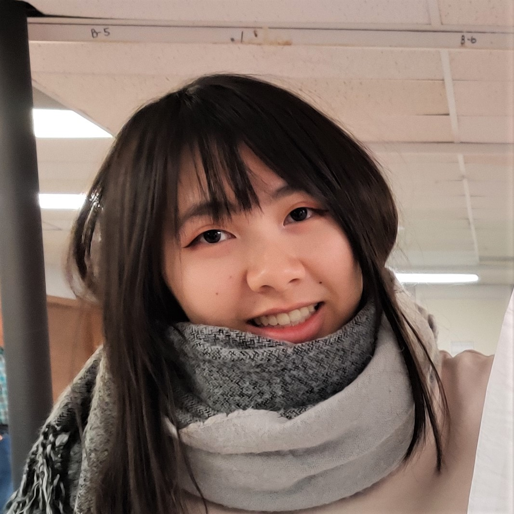
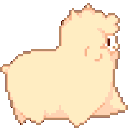

Born in Costa Rica. I am made out of cells.
I inhabit in a planet called Earth where I consume oxygen and give nothing in return for the planet other than CO2 that fuels desforestation.
This is the best website you'll ever find in the web because I say so.
Is that angel looking girl in the picture me? Yepp.
My major is graphic design and my job is to design for sloths because they are critically endagered.
Also llamas and alpacas are important.
I believe chickens are amazing and they should conquer the world.
Let's go llamas!
